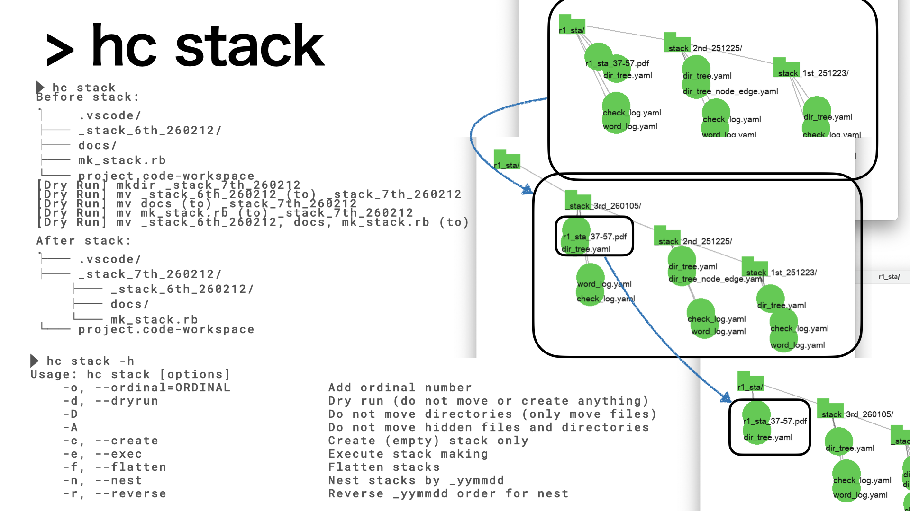
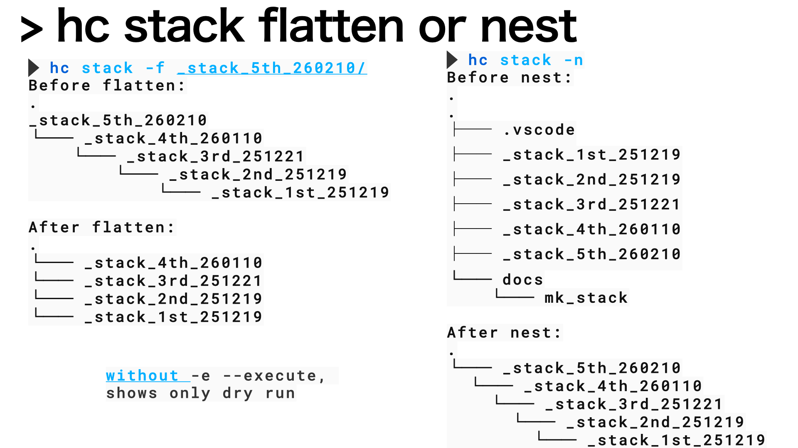

hc stack
Table of Contents
1. Name
make stack structures.
- gitのrepositoryのように，
- 新しい作業を始める前に，
- バックアップの'stack'構造を作成するコマンドです．
- 安心してcodeやdocsの改変に取り組むことが可能です．
- gitに慣れると手戻り(rewind)ができるようになりますが，
- 初心者が，いつでも過去のファイルを直接参照できるので，
- 安心です．
2. Help
> hc stack -h
Usage: hc stack [options]
-o, --ordinal=ORDINAL Add ordinal number
-d, --dryrun Dry run (do not move or create anything)
-D Do not move directories (only move files)
-A Do not move hidden files and directories
-c, --create Create (empty) stack only
-e, --exec Execute stack making
-f, --flatten Flatten stacks
-n, --nest Nest stacks by _yymmdd
-r, --reverse Reverse _yymmdd order for nest
3. What does 'stack' do?
|  |
| stack動作のポンチ絵. |
stackという動作名称は，昔のHyperCardシステムからの借用です．
やってることは，current directoryで新しい_stack_ordinal_yymmdd という 名前のdirectoryを作成し，そこに全てのファイル，directoryを 移すという操作です．
この後，
- directory名の修正
- 必要なファイルの移動，copy
を行い，新しく作業を上書きしていくことになります． 昔のファイルを参照することが多い作業者には，便利なはずです．
特に，mdでChatGPTとの会話を記録する必要がある作業者は， その場でmdを保存すると，
- treeコマンドで過去の履歴が一望，
- そこへcdすれば，その時の環境ですぐに検証可能，
- _stack_ordinal_yymmdd -> .stack_ordinal_yymmdd
- などとhiddenにすることも容易
- 不要なmd, code fileなどを隠す
ができます．
整理の基本となる，chunking, tight bindingを 強制するシステムコマンドです．ご活用ください．
4. flatten and nest
|  |
| stackのflatten, nest動作のポンチ絵. |
stackを積みすぎるとnestが深くなって移動が大変になります． hiddenにして表示を減らすよりもflatにして， 見やすくしたくなります． あるいはflatな構造をnestに戻したくなります． これらを自動でやってくれるのがflatten, nestオプションです．
対象とする名前(_stack_*_yymmdd)やdirectory構造 に制約があるので，dryrunを使ってbefore, afterを 確認してからexecute(-e)してください． それ以外の対象には手動で対処してください．